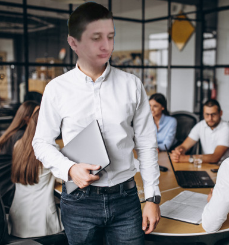

Who am I? What do I do?
I am a student at Harrisburg Area Community College studying in the field of Computer Science and Information Sciences.
I am very interested in all things technology and have a strong desire to learn and acquire a greater,
and broadened skill sets that I can use for work and my everyday life. My goals as computer professional are to utilize my relevant experience,
technical expertise and problem solving skills to learn more and grow in the ever changing fields of computers and technology. As of right now
I am a Supervisor of the Front End at Martin's Food Store.My Dream is to finish school and start my career in the IT Field.
